← All works

Monte Carlo Path Tracer
A Monte Carlo path tracer in C++ and GLSL. It solves the light transport equation with naive, direct-lighting and multiple-importance-sampling integrators, across specular, microfacet and dielectric materials.
- Year
- 2024
- Type
- Individual project
- Course
- CIS 4610 Advanced Rendering at UPenn
- Built with
- C++, GLSL, OpenGL, Qt
Overview
- IntegratorsNaive, direct lighting, and multiple importance sampling (MIS)
- LightsDirect lighting from multiple sources, including point and spot lights
- MaterialsBRDFs and BTDFs with Fresnel: specular, microfacet and dielectric
- SamplingStratified, grid and random
-
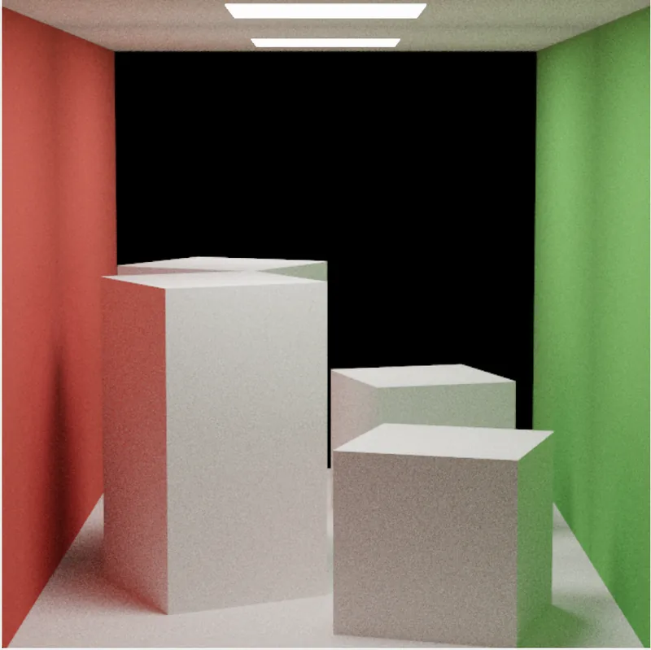
Specular BRDFs -
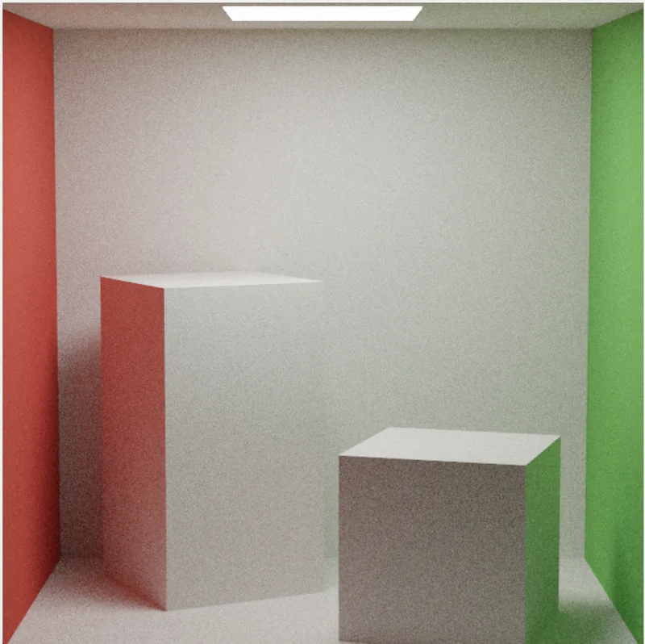
Naive Integrator -
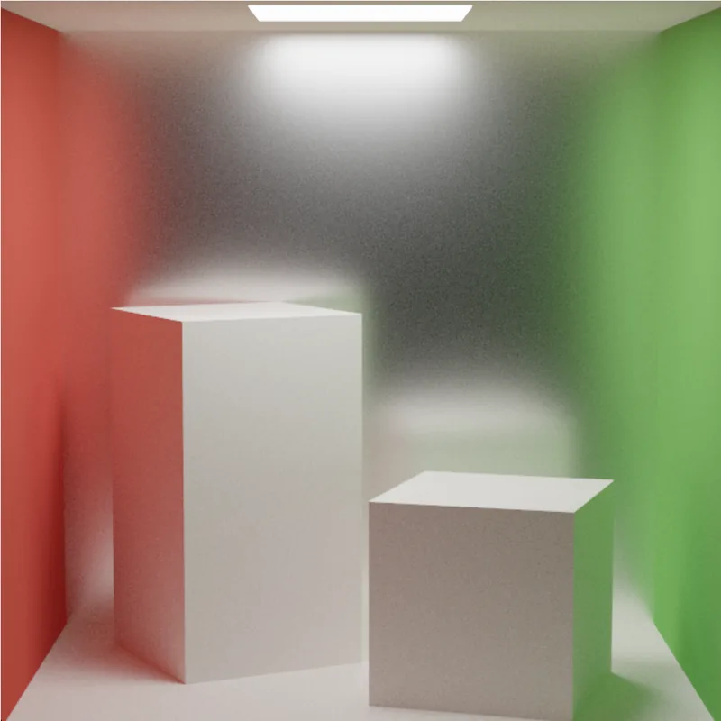
Microfacet BRDFs -
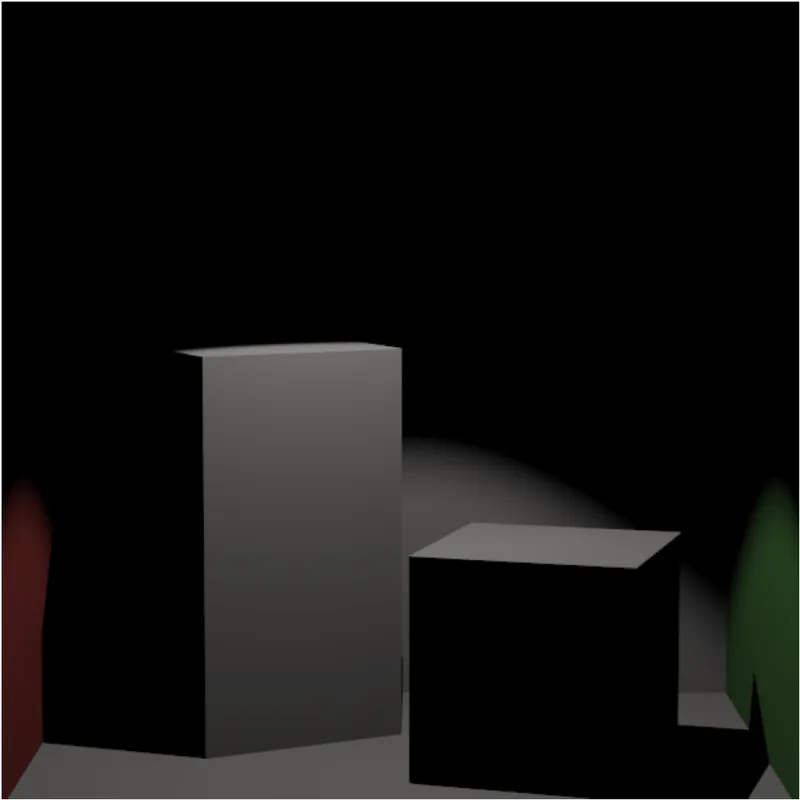
DirectSampleSpotLight -
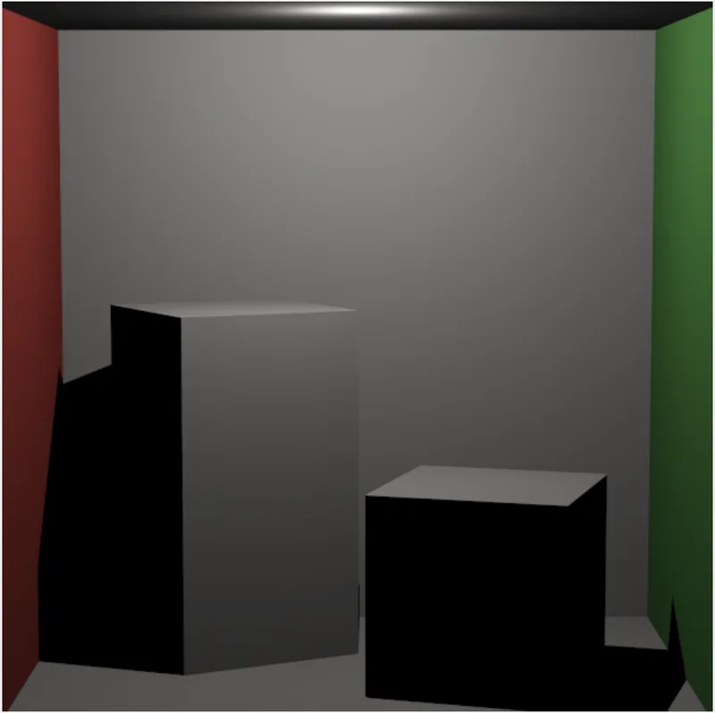
DirectSamplePointLight -
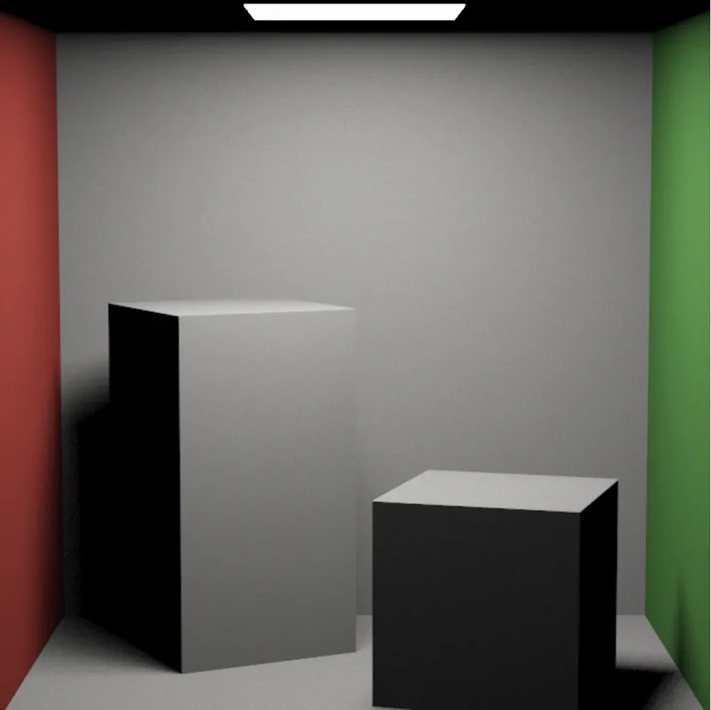
Direct Lighting -
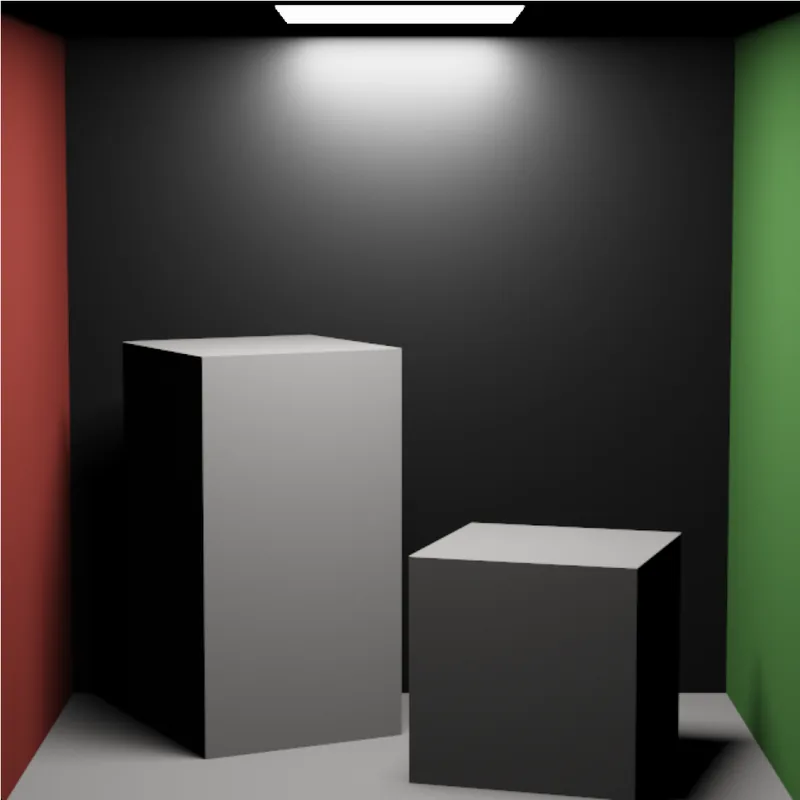
Multiple Importance Sampling 2 -
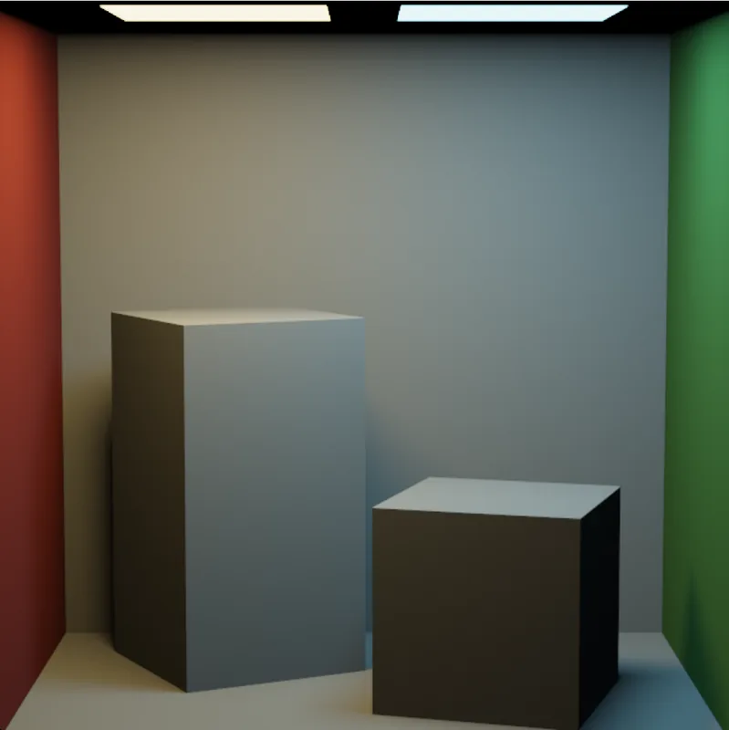
Multiple Importance Sampling 1 -
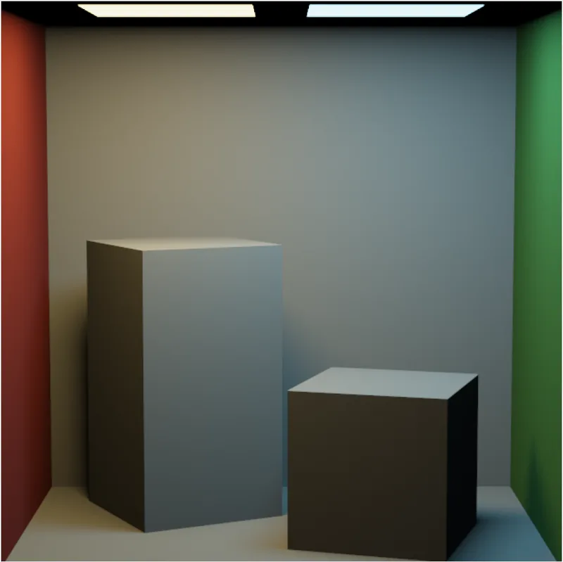
DirectLighting – CornellBoxTwoLights -
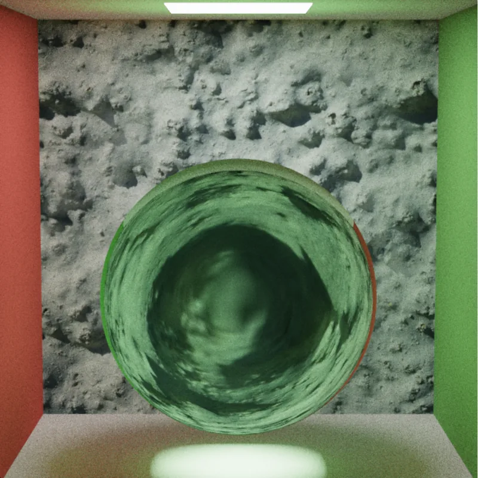
Specular BTDFs -
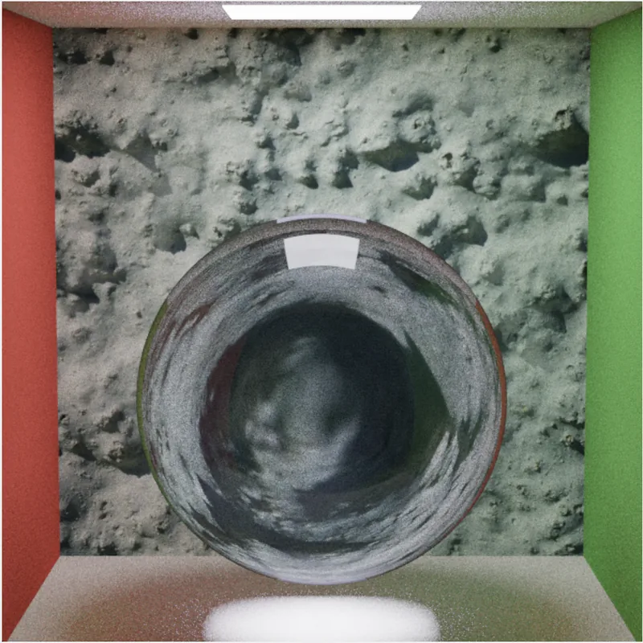
Specular BTDFs – Dielectric materials -
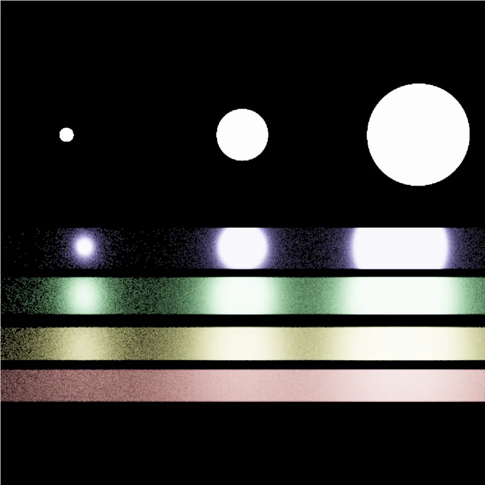
Veach Scene (BSDF Integrator) -
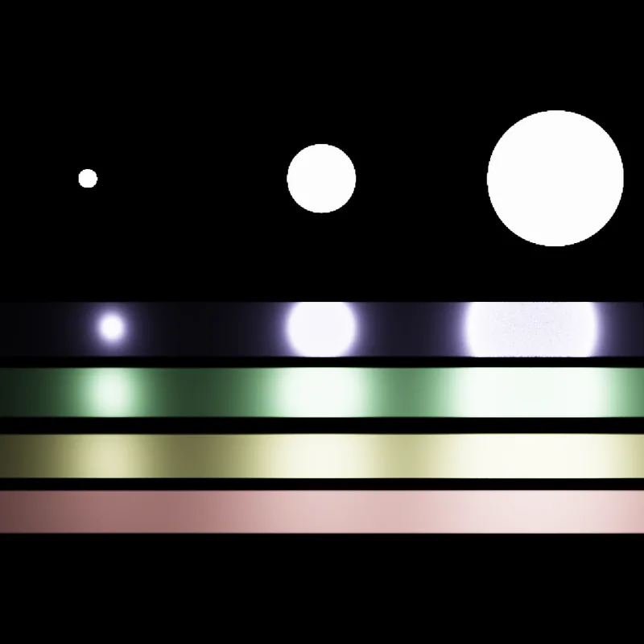
Veach Scene (Direct Light Integrator) -
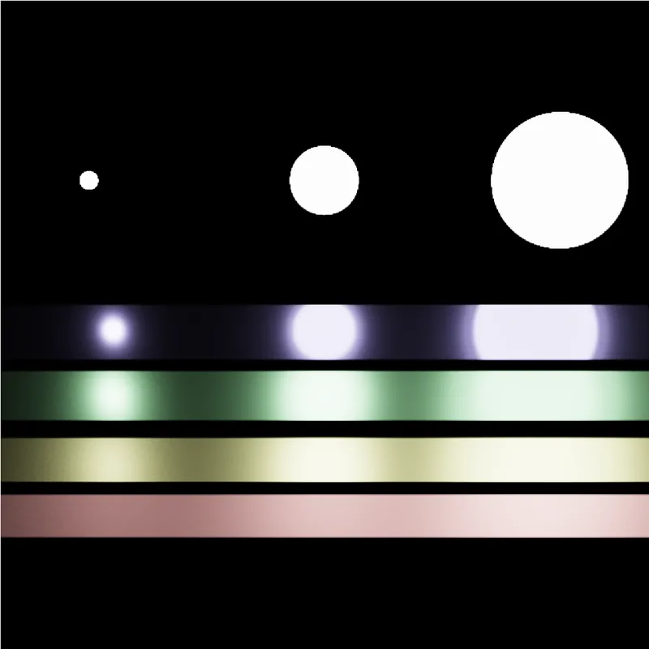
Veach Scene (MIS Integrator)